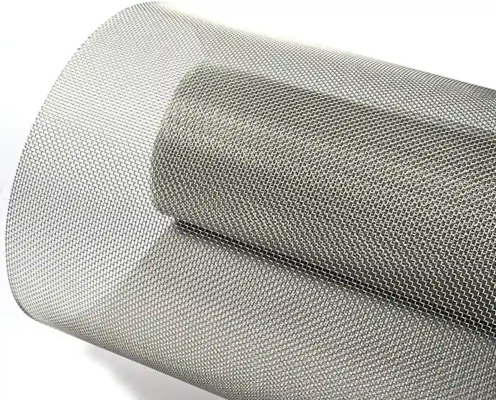
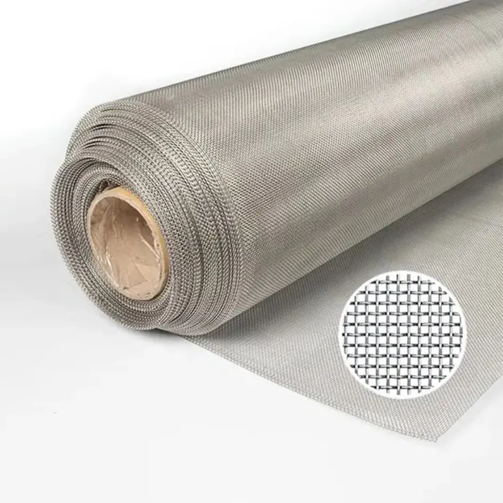
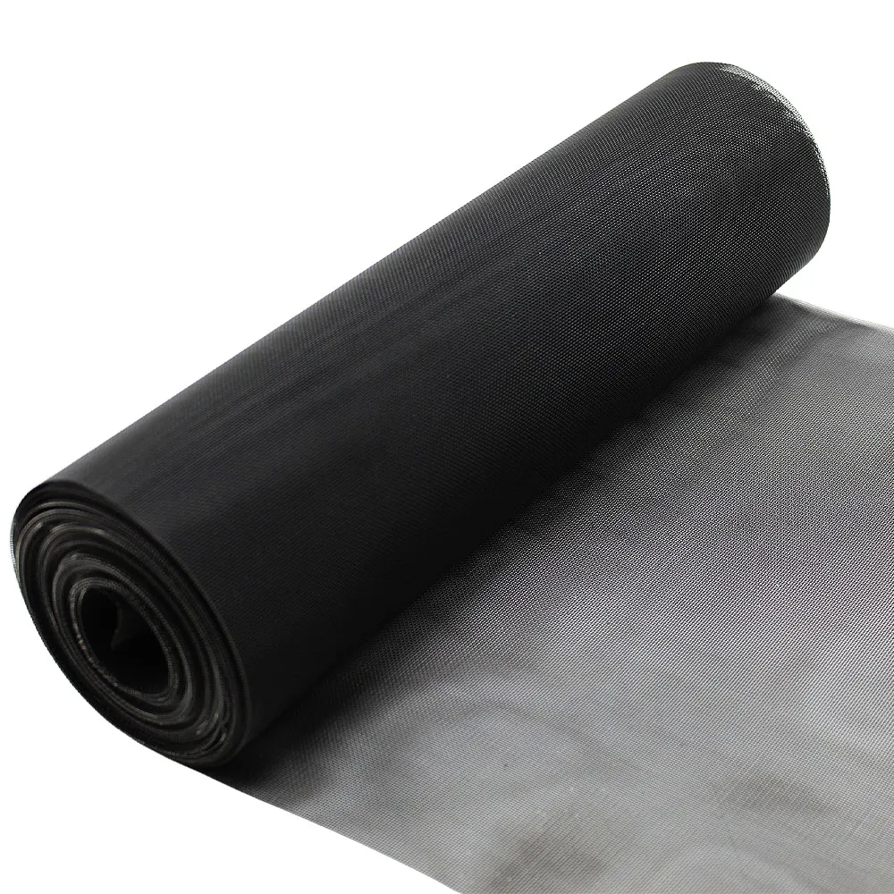

In industrial filtration, construction, and agricultural applications, metal wire mesh plays an indispensable role. Among the many types of metal wire mesh, epoxy coated wire mesh and galvanised woven wire mesh are frequently compared for their durability, corrosion resistance, and application versatility. In this comprehensive guide, we will explore the characteristics, advantages, disadvantages, and ideal applications of both epoxy coated woven mesh and galvanised woven mesh to help you determine which is best suited for your needs.
Understanding Woven Wire Mesh
Woven wire mesh is created by interweaving metal wires in a zigzag pattern. This structure offers exceptional strength and excellent aperture consistency, widely used in filtration and protective barrier applications.

Epoxy Coated vs Galvanised Woven Wire Mesh: Overview
Epoxy Coated Woven Wire Mesh
Epoxy coated woven wire mesh is manufactured by applying a thermosetting polymer (epoxy resin) coating to the surface of the woven wire mesh after the weaving process. This coating is typically applied using electrostatic spraying, followed by high-temperature curing to form a hard protective layer that chemically bonds with the base metal.

Galvanised Woven Wire Mesh
Galvanised woven wire mesh involves coating the woven wire mesh with a layer of zinc to prevent corrosion. Two methods are commonly used: hot-dip galvanising and electro-galvanising. The zinc layer forms a sacrificial layer that corrodes first, thereby protecting the base metal.

Durability Comparison
Durability is a key factor when choosing between epoxy coated and galvanised woven wire mesh.
- Epoxy Coated: Offers excellent wear resistance and maintains integrity under UV exposure environments.
- Galvanised: The zinc coating effectively prevents atmospheric corrosion, making it more suitable for outdoor applications. Hot-dip galvanised versions have thicker coatings and longer service life.
Conclusion: For indoor or UV-protected environments, epoxy resin is durable and easy to clean. For outdoor, humid, or corrosive environments, galvanised material is superior.
Corrosion Resistance Comparison
Corrosion resistance is perhaps the most critical differentiator.
- Epoxy Coated Woven Mesh: Features a seamless coating that acts as a moisture barrier, preventing exposure to corrosive substances. However, once the coating is damaged, its corrosion resistance diminishes.
- Galvanised Woven Mesh: Provides sacrificial anode protection. Even when scratched or slightly damaged, the zinc layer continues to protect the underlying metal through electrochemical action.
Conclusion: Galvanised mesh performs better in humid outdoor environments, while epoxy coated mesh excels in chemically stable, low-humidity indoor environments.
Mechanical Strength and Flexibility Comparison
Since both mesh materials share the same base material (typically low-carbon steel or stainless steel), their mechanical strength is largely similar unless the coating affects flexibility.
- Epoxy Coated Mesh: The epoxy coating adds a degree of stiffness, reducing the mesh's flexibility but enhancing rigidity and stability.
- Galvanised Mesh: Since the zinc coating does not significantly alter the material's ductility, it better maintains flexibility.
Conclusion: If formability is required (e.g., pressing the mesh into shapes), galvanised mesh has a slight advantage. For flat panel stability, epoxy coated mesh performs better.
Visual Aesthetics and Customisation Comparison
In terms of appearance, epoxy coating offers clear advantages over galvanised woven wire mesh.
- Epoxy Coated Mesh: Available in custom colours, primarily black and grey, making it more visually appealing. Commonly used in architectural and interior design applications.
- Galvanised Mesh: Features a standard metallic sheen with limited aesthetic options. Hot-dip galvanised mesh may have a rougher surface appearance.
Conclusion: Epoxy resin wins in visual appeal, making it the preferred choice for exposed applications where appearance matters.

Cost Comparison
Cost plays a crucial role in large-scale applications. The price difference between epoxy coated and galvanised woven wire mesh depends on coating thickness, base material, and production volume.
- Epoxy Coated Mesh: Typically more expensive due to the additional coating process and curing requirements.
- Galvanised Mesh: More economical, especially for bulk orders. Hot-dip galvanised mesh costs more than electro-galvanised mesh but remains below epoxy coated mesh in most cases.
Conclusion: Galvanised mesh is budget-friendly, while epoxy resin mesh is a premium choice for specialised applications.
Environmental Impact and Sustainability Comparison
Sustainability is increasingly valued in industrial procurement.
- Epoxy Coating: Production involves resins and solvents that may pose environmental concerns unless certified eco-friendly coatings are used.
- Galvanising: Zinc is a natural mineral, and the galvanising process is mature and widely recycled. Galvanised mesh can typically be reprocessed.
Conclusion: Both galvanised mesh and epoxy resin mesh are generally recyclable and environmentally sustainable.
Customisation Capabilities Comparison
Both mesh types can be customised, but the scope of customisation varies.
- Epoxy Coated Woven Wire Mesh: Offers greater variety in colour, gloss level, and texture. Suitable for both decorative and functional purposes.
- Galvanised Woven Wire Mesh: Customisation is limited to mesh size, wire diameter, and galvanising method.
Conclusion: For architects and designers with specific aesthetic requirements, epoxy resin coated mesh is the better choice.
High-Temperature Performance Comparison
Temperature stability is critical for certain specialised industrial applications.
- Epoxy Coating: Epoxy coatings do not degrade even at temperatures above 120–150°C, making them suitable for high-temperature applications.
- Galvanising: The zinc coating remains stable below 200°C and can withstand occasional exposure to higher temperatures.
Conclusion: Epoxy coated mesh performs better in high-temperature environments.
Which One Should You Choose?
The choice between epoxy coated and galvanised woven wire mesh depends on your specific requirements:
- For harsh chemical environments: Choose Epoxy Coated Woven Wire Mesh.
- For outdoor fencing or cost-sensitive projects: Choose Galvanised Woven Wire Mesh.
- For decorative or architectural applications: Epoxy Coated Woven Wire Mesh offers better aesthetics.
Conclusion
Epoxy coated and galvanised woven wire mesh each have their own advantages depending on the application scenario. If corrosion resistance and aesthetics are primary considerations, epoxy coated woven wire mesh is the better choice. However, for general-purpose and budget-conscious projects, galvanised woven wire mesh remains a reliable option.
Looking for high-quality epoxy coated or galvanised woven wire mesh for your next project? Contact our team for customized solutions and competitive pricing. Request a Quote